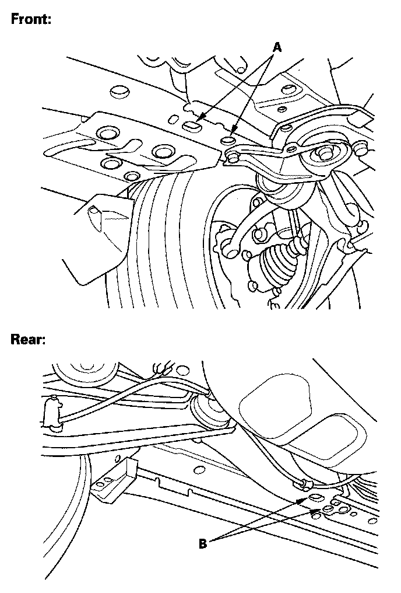
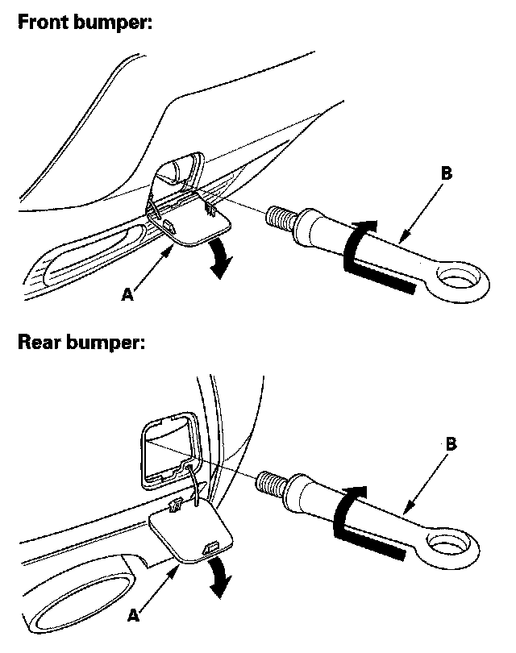

Towing Information: Service and Repair
TowingIf the vehicle needs to be towed, call a professional towing service. Never tow the vehicle behind another vehicle with just a rope or chain. It is very dangerous.
Emergency Towing
There are three popular methods of towing a vehicle.
Flat-bed Equipment - The operator loads the vehicle on the back of a truck. This is the only way of transporting the vehicle.
To accommodate flat-bed equipment, the vehicle is equipped with front tie down hook slots (A), and rear tie down hook slots (B).

The tie down hook slots can be used secure the vehicle to the truck.
Towing Hook Installation
The detachable front towing hook is for towing very short distance, such as freeing the car. The hook mounts to the anchor in the front and rear bumper.
NOTE:
- To avoid damage to the vehicle, use the towing hook for straight flat ground towing only. Do not tow on an angle.
- The tow hook should not be used to tow the vehicle onto a flat-bed. Do not use it as a tie down.

1. Remove the cover (A) from the front bumper.
2. Remove the towing hook placed behind a cover under the cargo area.
3. Screw in the towing hook (B), and tighten it securely by hand.
Wheel Lift Equipment - The tow truck uses two pivoting arms that go under the tires (front or rear) and lift them off the ground. The other two wheels remain on the ground. Never tow the vehicle with wheel lift equipment.
Sling-type Equipment - The tow truck uses metal cables with hooks on the ends. These hooks go around parts of the frame or suspension, and the cables lift that end of the vehicle off the ground. The vehicle's suspension and body can be seriously damaged if this method of towing is attempted. This method of towing the vehicle is unacceptable.
The only recommended way of towing the vehicle is on a flat-bed truck.
NOTE:
- Towing the vehicle with only two wheels on the ground will damage parts of the SH-AWD system. If the vehicle is damaged, it should be towed on a flat- bed truck or trailer.
- Trying to lift or tow the vehicle by the bumpers will cause serious damage. The bumpers are not designed to support the vehicle's weight.